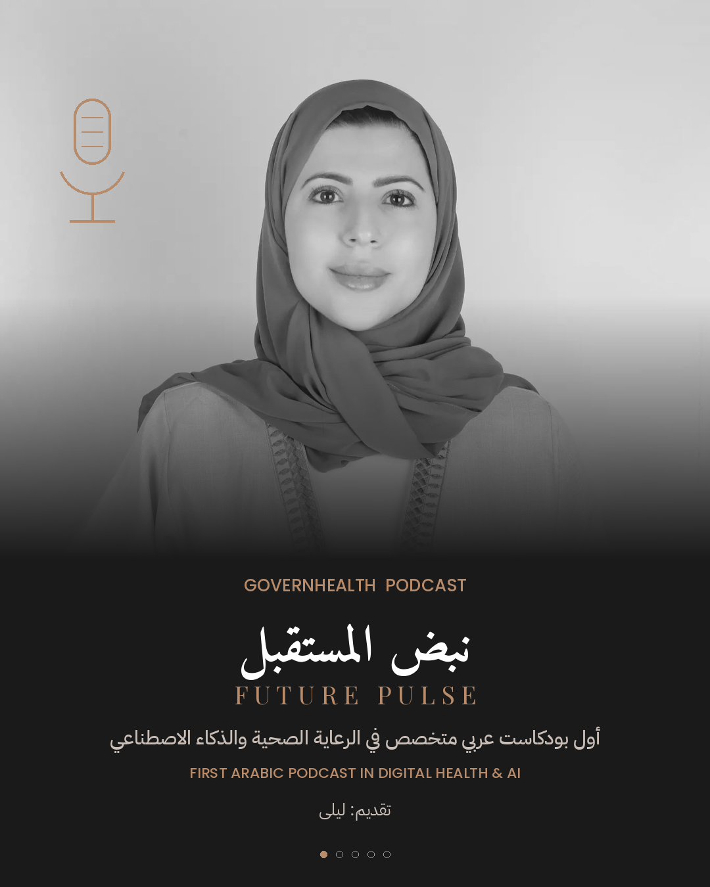
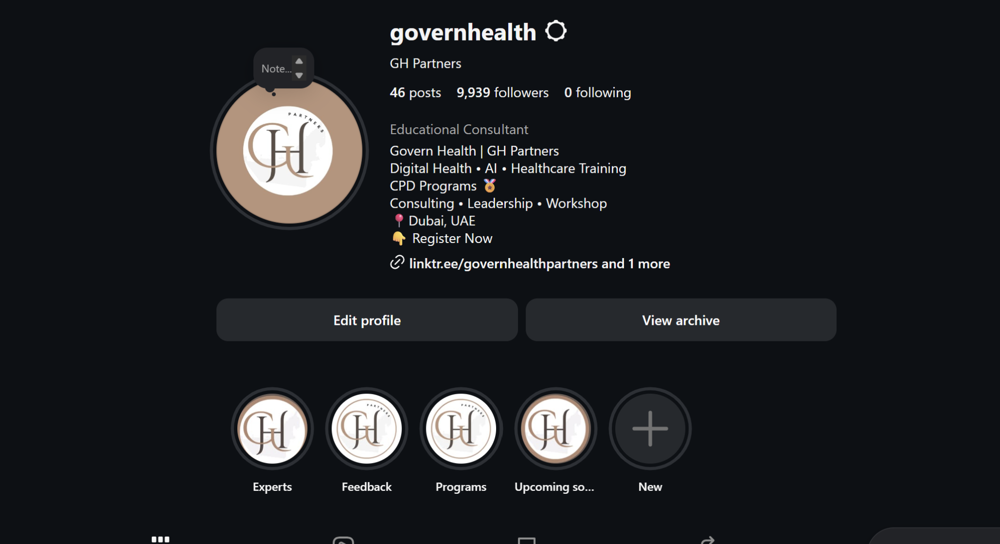
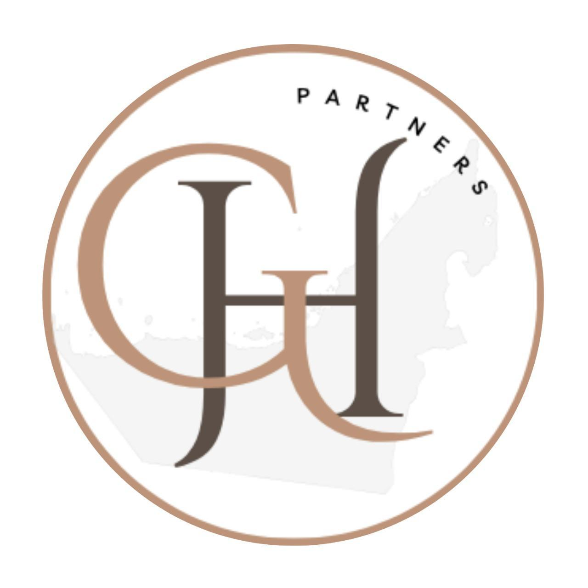

تطوير القيادات والقوى العاملة
برامج عملية تبني قيادات صحية قادرة على تحقيق أثر مستدام.
نُمكّن المؤسسات والمهنيين الصحيين عبر تطوير القيادات، التدريب، الاستشارات، وحلول التحول الصحي المبتكرة.

جزء من منظومة الابتكار في دولة الإمارات، ومتوافقون مع مبادرات محمد بن راشد، ومرتبطون بمجمع الشارقة للبحوث والتكنولوجيا والابتكار SRTIP.
برامج عملية تبني قيادات صحية قادرة على تحقيق أثر مستدام.
حلول تحول صحي تربط الرؤية بالتنفيذ والحوكمة.
تصميم رحلات إنسانية أكثر كفاءة وجودة وتأثيرًا.
Coaching وMentoring يدعمان تطور الكفاءات الصحية.
شراكات وحلول تعزز مرونة النظام وجودة مخرجاته.
تبنٍ مسؤول للتقنية يضع الإنسان في مركز القرار.
تدريب مهني يجمع المعرفة بالتطبيق ويخدم احتياجات القطاع الصحي.
20 CPD Hours · Sharjah — مع Dr. Sumaya Mohamed Alblooshi
تطبيقات الذكاء الاصطناعي في الإدارة الصحية والحوكمة واتخاذ القرار.
From Rhythm Recognition to Rapid Response · 11 CME/CPD Hours
لحظات من التعلم، التواصل، وبناء قدرات المهنيين الصحيين.


أول بودكاست عربي متخصص في الرعاية الصحية الرقمية والذكاء الاصطناعي. حوارات مع قادة وخبراء يرسمون مستقبل الطب والتقنية وصناعة القرار الإنساني.
بين خبرة الممرض وتنبيه الخوارزمية ومسؤولية القرار في اللحظة الحرجة.
كيف نصمم تجربة صحية رقمية أكثر إنسانية؟
انضم إلى برامجنا، احجز استشارة، أو تواصل معنا للمشاركة في البودكاست.
دبي | الإمارات العربية المتحدة
تواصل عبر واتساب